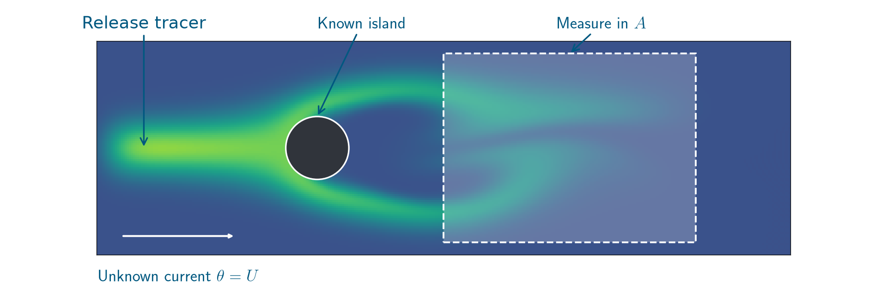
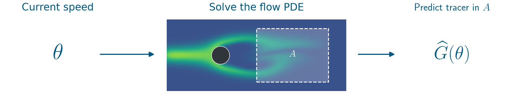
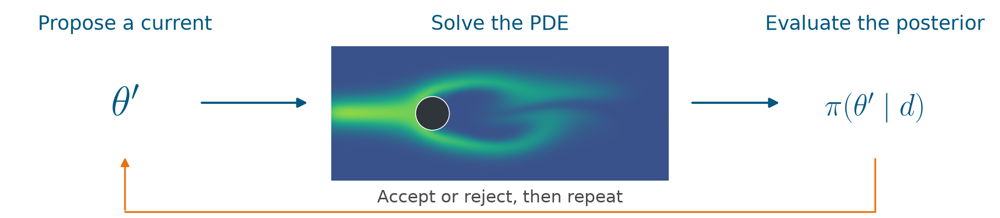
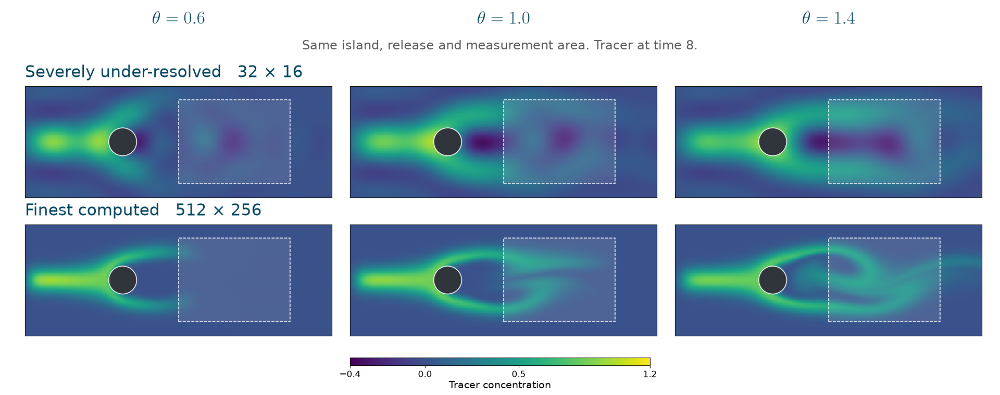
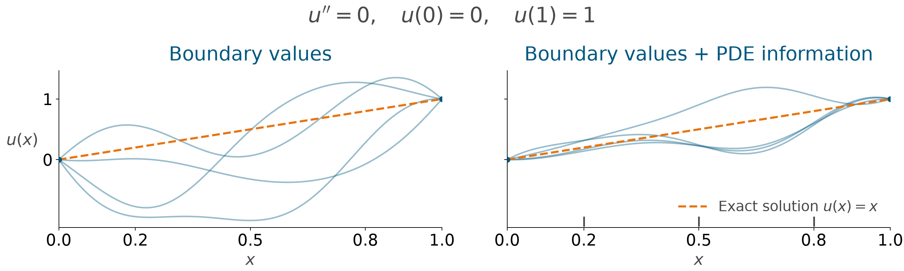
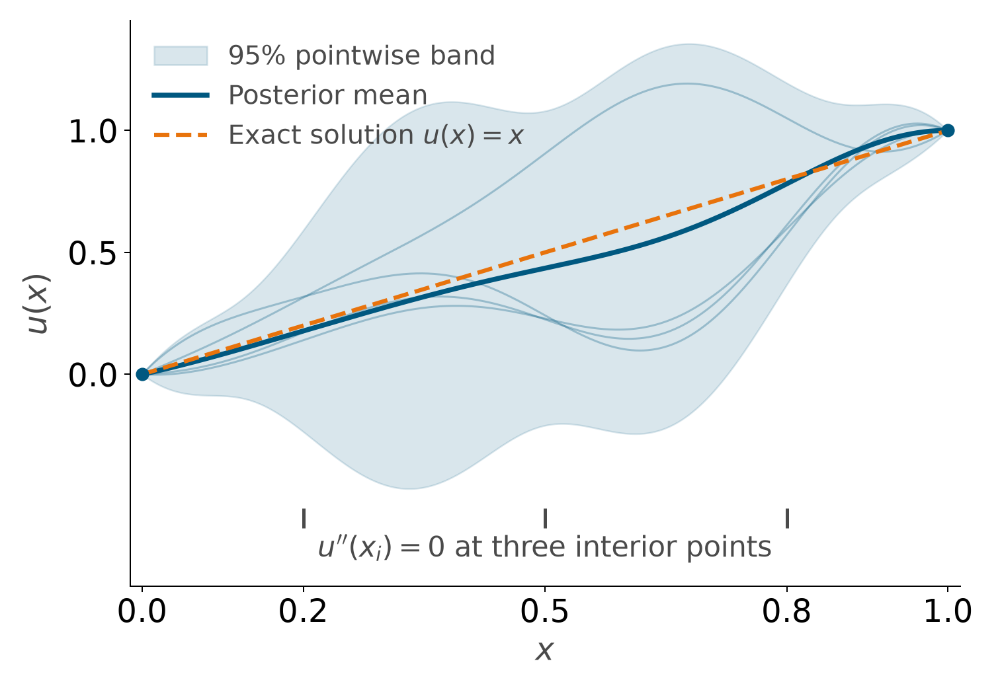
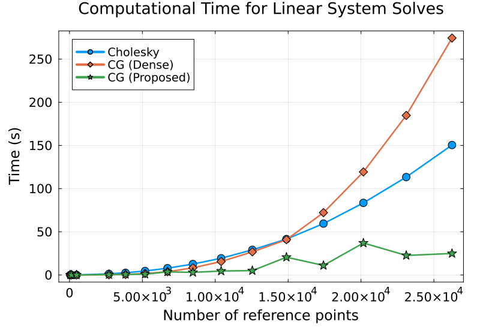
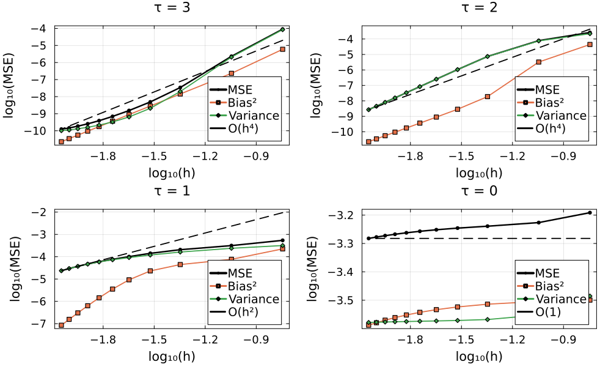
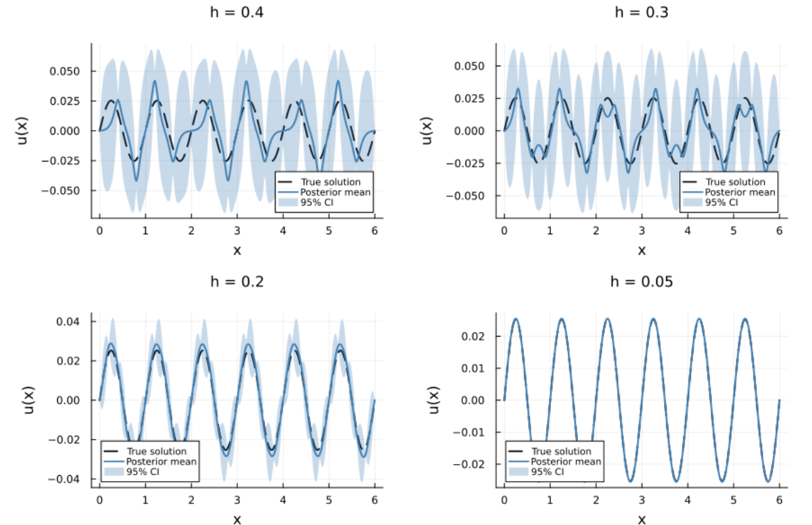
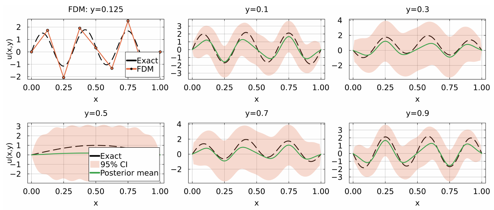

Towards Discretisation Error Quantification in Climate
Jon Cockayne
School of Mathematical Sciences, University of Southampton
Keio–Imperial–Reading–Southampton Joint Workshop
Keio University, 16–20 November 2026
Inferring an ocean current from tracer transport

Infer the current speed from the tracer measured in \(A\).

\[ \underbrace{\pi(\theta\mid d)}_{\text{posterior}} \ \propto\ \underbrace{\pi(d\mid\theta)}_{\text{likelihood}} \,\underbrace{\pi_0(\theta)}_{\text{prior}} \]
\[ d\mid\theta\sim\mathcal N\!\left(\widehat G(\theta),\sigma_{\mathrm{obs}}^2\right) \]

\[ \text{sampling cost}\ \approx\ N_{\mathrm{proposals}}\times C_{\mathrm{PDE}}(h) \]
Can solver fidelity control this cost?
Which features of the computed flow are resolved?

The coarse solution still carries information about the current speed.
\[ d\mid\theta\sim\mathcal N\!\left( \widehat G(\theta),\; \sigma_{\mathrm{obs}}^2 + \underbrace{\color{Orange}{\sigma_{\mathrm{solver}}^2(\theta)}}_{\text{solver uncertainty}} \right) \]
Next: construct solver-error models so that the resulting inferences are calibrated.
Bayesian inference for a numerical solution
BIP: Infer the current \(\theta\) from measurements
\[ \pi_0(\theta)\quad\xrightarrow{\quad d\quad}\quad\pi(\theta\mid d) \]
ProbNum: Infer the PDE solution from synthetic “data” \(y_n\), for a current \(\theta\).
\[ \mu_0\quad\xrightarrow{\quad y_n\quad}\quad \mu_n=\operatorname{Law}(U\mid\mathcal y_n; \theta) \]
Choose information functionals \(\ell_i : \mathcal{F} \to \mathbb{R}\):
\[ \mathcal L u=f \qquad\longrightarrow\qquad \underbrace{\langle\ell_i,\mathcal L u\rangle =\langle\ell_i,f\rangle}_{\text{``data'' }y_i},\quad i=1,\ldots,n \]

\[ \mathcal L u=f,\qquad U\sim\mathcal{GP}(m_0,k_0) \]
Assuming \(\ell_i\), \(\mathcal{L}\) are linear and suitable regularity of \(k_0\), \(m_0\),
\[ \mathcal I_n U= \begin{pmatrix} \ell_1(\mathcal L U)\\[-0.2em] \vdots\\[-0.2em] \ell_n(\mathcal L U) \end{pmatrix} \] is jointly Gaussian with \(U\).
\[ y_n=\bigl(\ell_i(f)\bigr)_{i=1}^n, \qquad \mathcal I_n U=y_n \]
\[ U\mid\mathcal I_n U=y_n \sim\mathcal{GP}(m_n,k_n) \]
\[ \begin{aligned} m_n(x)&=m_0(x)+c_n(x)^\top K_n^{-1}(y_n-\mathcal I_n m_0),\\[0.6em] k_n(x,x')&=k_0(x,x')-c_n(x)^\top K_n^{-1}c_n(x'). \end{aligned} \]
\[ c_n(x)=\operatorname{Cov}(\mathcal I_n U,U(x)),\qquad K_n=\operatorname{Cov}(\mathcal I_n U,\mathcal I_n U). \]

Linear problems for which this has a genuine impact are rare. Moving beyond linear problems brings several challenges.
These are largely unsolved for PDEs.
The next section models operator error to obtain a usable likelihood for nonlinear PDEs.
Discretisation error in the observation model
Work with Shoji Toyota and Nicholas Krämer
\[ D u=f \]
Many PDE solvers use an operator approximation
\[ D_h \hat{u} = f \]
Telescope as: \[ f=\underbrace{D_hu}_{\text{approximate operator}} +\underbrace{(D-D_h)u}_{\text{exact error}} \]
In the probabilistic framework we can therefore consider the error process \(E_h = (D - D_h) U\).
Assume an order-\(b\) finite-difference scheme:
\[ D_h u_h=f_X,\qquad \|u_h-u_X\|_X=O(h^b) \]
Approximate the error in the grid equations by independent noise:
\[ f_X=D_h U_X+\varepsilon_h,\qquad \varepsilon_h\sim\mathcal N(0,C^2h^{2\tau}I) \]
Our interest is then in the conditional law \[ U_X \mid D_h U_X = f_X + \varepsilon_h \]
Interior unknowns, after imposing exact boundary values: \(U_X\sim\mathcal N(m,K)\).
\[ U_X\mid f_X\sim\mathcal N(m_h,K_h),\qquad A_h=D_hKD_h^\top+R_h \]
\[ m_h=m+KD_h^\top A_h^{-1}(f_X-D_hm) \]
\[ K_h=K-KD_h^\top A_h^{-1}D_hK \]
\(R_h=C^2h^{2\tau}I\).
For a linear PDE, solve with \(A_h=D_hKD_h^\top+R_h\).
\[ A_hv=D_h\!\left[K(D_h^\top v)\right]+R_hv \]
\[ \text{Cost per CG iteration:}\qquad O(N\log N) \]

Linear systems within PFDM; comparison with dense implementations.
The discrete PDE map \(D_h\) may be nonlinear.
\[ \frac{\mathrm d\mu_h}{\mathrm d\mu_0}(u) \ \propto\ \exp\!\left[-\frac{\|f_X-D_hu_X\|_2^2}{2C^2h^{2\tau}}\right]>0 \]
\[ \operatorname{supp}\mu_h=\operatorname{supp}\mu_0 \]
Use standard posterior inference, including Laplace approximation.
Compute a numerical solution \(u_h\) on the fine grid.
\[ D_hu_h=f_h \]
Restrict to the coarse grid, then evaluate its PDE residual:
\[ r_{2h}=D_{2h}\bigl(u_h|_{X_{2h}}\bigr)-f_{2h} \]
Use this computable discrepancy to estimate the error scale \(C\).
For a leading truncation error \(D_hu_X-f_X\approx h^\tau c_X\):
\[ \widehat C_h= \frac{\|r_{2h}\|_2}{(2^\tau-1)h^\tau\sqrt{N_{2h}}} \]
Under the stated error-expansion and consistency assumptions,
\[ \widehat C_h\longrightarrow \underbrace{|\Omega|^{-1/2}\|c\|_{L^2(\Omega)}}_{\text{RMS leading error coefficient}} \]
For a linear PDE with an order-\(b\) FDM and suitable error decay, under additional technical assumptions:
\[ \underbrace{\|u_h-u_X\|_X}_{\text{deterministic error}}=O(h^b) \]
\[ \underbrace{\left(\mathbb E[\|U-u\|_X^2\mid f_X]\right)^{1/2}}_{\text{posterior RMS error}} =O(h^b) \]
For a stable linear discretisation and compatible prior:
\[ \mathbb E\!\left[\|U-u\|_X^2\mid f_X\right] =O\!\left(h^{2\min(\tau,b)}\right) \]
Compared to the error in the underyling numerical method (\(\mathcal{O}(h^b)\)):

Second-order Poisson scheme; fixed kernel hyperparameters and ideal error scale.

\(-\Delta u+u^3=f\) on \((0,1)^2\), \(u|_{\partial\Omega}=0\); \(7\times7\) interior grid

Gauss–Newton Laplace approximation. One manufactured PDE; calibration untested.
Any questions?
A. M. Stuart (2010). Inverse problems: A Bayesian perspective
Acta Numerica 19, 451–559.
J. Cockayne, C. J. Oates, T. J. Sullivan and M. Girolami (2019). Bayesian probabilistic numerical methods
SIAM Review 61(4), 756–789.
J. Cockayne, C. J. Oates, T. J. Sullivan and M. Girolami (2017). Probabilistic numerical methods for PDE-constrained Bayesian inverse problems
AIP Conference Proceedings 1853, 060001.
Interior unknowns \(v\), with exact boundary values imposed; prior \(\mathcal N(m,K)\).
\[ \widehat u=\underset{v}{\arg\min}\; \left\{\tfrac12\|f_X-D_h(v)\|_{R_h^{-1}}^2 +\tfrac12\|v-m\|_{K^{-1}}^2\right\} \]
\[ U_X\mid f_X\ \approx\ \mathcal N(\widehat u,\Sigma_{\mathrm{GN}}) \]
\[ \Sigma_{\mathrm{GN}}=\left(K^{-1}+J^\top R_h^{-1}J\right)^{-1}, \qquad J=D_h'(\widehat u) \]
\(\|z\|_M^2=z^\top Mz\), \(R_h=C^2h^{2\tau}I\). Gauss–Newton curvature approximation.